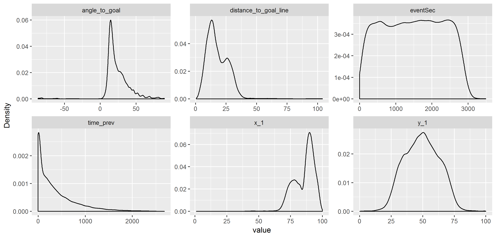
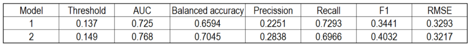

Along this article I am going to share some detail which could be useful if you want to fit your own xG model, in addition to its respective performance evaluation and results analysis.
What is xG?
The xG (eXpected Goals) is the main metric used into the Football Analytics field nowadays. In simple words, it is the probability (from 0 to 1) that a shot has to become in a goal. So probability equal 1 means Goal and probability equal 0 means No Goal.
Those mentioned probabilities are obtained from a statistic model trained with the enough amount and variety of shot data with its respective spatial, temporal and context information.
One of the most important features to fit a xG model is the shot position inside the field (e.g. X,Y coordinates), wherewith it is possible to obtain the shot distance to goal and the shot visible angle. The following viz shows the xG values from a basic model which considers only this two features. As it is expected, the closer the shots is made the higher the xG value:

Anyway there are another useful features to consider for xG model improvements. In this article we are going to mention and/or to see details of some of them.
If you want to review more details and using examples of xG, take a look on this previous article (sorry, just in Spanish).
Data
I took advantage to use the football events public dataset by Wyscout with all games of top 5 european leagues along season 2017-2018. Here you can download the dataset and here you can review details about its content and a descriptive analysis related.
Only unblocked shots from Open Play are included. So, blocked shots and penalty kicks, free kicks, corners, etc. are not included. After to process the information i got a dataset with 30912 shots, of which 4270 were goals (~14%).
Now a spatial visualization of those shots, splitting by result Goal (red) and No goal (blue). It is noticed that most of goals comes from shots inside the box.
Tools
To do the complete data science workflow I used RStudio, applyng different packages depending each specific stage:
- Processing: jsonlite + dplyr + tidyr + purrr
- Visualization: ggplot2 + ggsoccer + DataExplorer + RColorBrewer
- Modelling: h2o + caret + pROC + ROCR + pdp + DALEX
I also created this Github repository in order you can review the code and ideally reproduce all the thing shown in this article. There some comments and explanations for different parts are included (features edition/creation, model fitting and evaluation, visualizations, etc.), in addition to the “getshots” function which allows you to read/process/parse the raw data (JSON files) and get the dataframes with the columns that i considered as useful.
Features
Here the list of all considered features. Some of them were used as they come (without processing) and another were created from data processing and joining with different tables.
Shot location coordinates (x_1, y_1): These are considered without processing. Both cases represent percentage of location (0% to 100%) related to longitude and width of the field, respectively.
Shot distance (distance_to_goal_line): Distance in meters between the shot location and the central point of the goal line. It was calculated from the coordinates x,y [%] and the mean dimensions for a football field (length: 105 meters, width: 68 meters).
Visible shot angle (angle_to_goal): It is the visible shot angle to goal that the shooter has from the shot location. It is obtained from shot location coordinates, the mean dimensions of the field and the length of a goal (7.32 meters). Here an example with different angles.
- Body part (skilled_foot): Categorical feature created with 3 levels to classify the body part used to do the shot.
Head/Body: Head or any body part besides foots
Skilled foot = Yes: The shot was done with the skilled foot of the shooter
Skilled foot = No: The shot was NOT done with the skilled foot of the shooter
Second of the event (EventSec): Seconds from the starting of first or second half until the shot time.
Match half (MatchPeriod): Categorical feature with 2 levels to represent if shot happened at 1st half (1H) or 2nd half (2H).
Time from previous shot (time_prev): Time in seconds from the last shot of the same team in the same half of the same game. The idea here is try to add some information about rebounds.
Is counter attack? (is_CA): Boolean feature to indicate if the shoot was part of a counter attack or not.
Shot result (is_goal): It is the feature that we want to predict. Goal = 1, No Goal = 0.
Brief exploratory analysis
- Correlation matrix
The features with the hightest absolute value of linear correlation for “is_goal = 1” are the shot distance (-0.26), the X coordinate (0.22) and the visible shot angle (0.16). A priori we could say that these features will be relevant for the model.
It is noted the high linear correlation between the distance and the X coordinate (-0.95), as it is expected. This point could be considered in future analysis or improvements in order to avoid including high correlated predictors.
- Categorical features
Most of considered shots occur along not counter attacks plays (is_CA = 0), with the skilled foot of the player (skilled_foot = Yes) and at 2nd half.
- Numerical features

Most of considered shots occur roughly from less than 35 meters to goal and mainly from visible angles close to 20°. There are some cases of negatives values which could be reviewed in detail for future analysis or improvements.
Model fitting considerations
It is important to keep in mind that this is a binary classification problem, owing the variable to predict (is_goal) has two possible results: Yes and No (1 and 0).
For the fitting i used the Auto Machine Learning algorithm from the h2o package in order to get the algorithms which have a good performance for this problem. Besides the ensambled methods that proposes the tool h2o, in general the best ranked algorithm was Gradient Boosting Machine(GBM). I decided to use GBM despite xGBoost or a “simple” logistic regression may also have good performance.
Even though this is a case with unbalanced classes (there only are roughly 14% of goals versus 86% of non goal shots), when we work with Boosting based technics that is not a problem due the nature of these kind of algorithms solves it by itself.
I splitted the dataset considering 80% for training and 20% for testing purposes. For training i used cross validation.
Finally I fitted 2 models:
- GBM model with only 2 features (distance + angle)
- GBM model with all the features described before (9)
- I didn’t try to optimize model hyperparameters. So, this could be an improvement option in future as well.
Results analysis
- Models performance
For performance evaluation I considered the metrics F1 (F Score), Balanced Accuracy, AUC (Area Under Curve), Precission + Recall at hte same time and RMSE. If you are not familiarized with those metrics, take a look on this article.
Here a table with the performance of the 2 models detailing their values for all mentioned metrics and then a ROC curve graph where it is possible to see the AUC gain when all features are included. Both cases consider an optimized threshold for Balanced Accuracy and using the testing dataset of course.


It is sure that model Nª2 (red line) represent the best option due its better performance for all metrics, expcet for Recall whose value drop down from 0.7293 to 0.6966, which is acceptable considering the improvements for the rest of metrics.
If we compare this performance with another xG models, we get this model has to be improved, even definitively is not a bad case to start. For example, in terms of RMSE the ideal values should be between 0.26 and 0.3; whereas for AUC between 0.79 and 0.81.
It is important to remember that only Open Play shots, from one season (2017-2018) and 5 leagues are considered.
- xG values
The obtained xG values have the expected distribution, despite there are some outliers (look at the half field right side shots).
- Feature importance
Now a feature importance ranking (scaled values) for the model Nº2:
It is clear that the top 3 more relevant features are the distance to the goal, the visible shot angle and the body part. At other hand, the less relevant features are the game period and the boolean feature about the counter attack case.
It is important to keep in mind that this ranking is based on the MSE metric, which is gotten by default from the tool h2o. So, it is possible to analyze the feature importance with another metrics.
- Partial dependency plots
This kind of plots allow us to observe how the features affect the model predictions depending on the values that they have. Here the case for the 3 most important features.
Distance to goal:
Both models consider in a similar way the shots from less than 25 meters. The lower the distance the higher the probability (even though the model Nº1 has weird peak close to 13 meters).
For distance higher than 25 meters, the model Nº2 assign an almost fixed value of probaility near to 0.25. That is possibly compensated with the interaction to another feature. At another hand, the model Nº1 assign a probability close to 0 for these long distances, excepting another strange peak close to the 100 meters surely due to some outlier goal and/or having a small size samples for long shots.
Visible shot angle:
Both models increase the probability as the visible shot angle also increase, from 15º in forward. The model Nº2 is the most conservative.
For some negatives angles the model Nº1 has a different behaviour: it assigns high probability value, which is wrong in a simple inspection. In contrast, the model Nº2 practically keep its prediction in the same level as the lower angles than 15º. Anyway, the negative angles should to be a point for detailed future reviews.
Body part (skilled foot):
It is possible to observe that there is not a big predictions difference between shots with skilled foot or not, but there is a big one between foot shots and head/body shots. As expected, the foot shots has a higher probability.
- Potential features to add
The following list contains some additional features potentially useful to the model performance:
Location of another players at the time of shot: Goal keeper location, amount and location of opponents and partners.
Assistance (previous pass) details: Beside pass positions, also the type of (long ball, crossout, through ball, back pass, etc.)
Position where the shooter plays (forward, midfielder, defender, etc.)
Some “arbitrary” codification for the danger of plays (e.g. Opta uses the metric “Big chance”)
Ball high
Distance and Angle of the previous shot
Score difference
Local / Away condition for the shooter team
Tournament type
Application example
I enjoyed to create a shotmap for “the king” Arturo Vidal in his last season playing for Bayern München, using the just fitted xG model.
Specifically, we can see all the not blocked shots locations (33), results and their respective xG values mapped with the points size. At the same, it is possible to calculate the cummulated xG sum (3.7) to compare it with the converted goals (6), getting a positive difference of +2.3. So, Vidal had a great performance in terms of goal conversion, better as the expected.
If you have any question feel free to reach me by Twitter here.